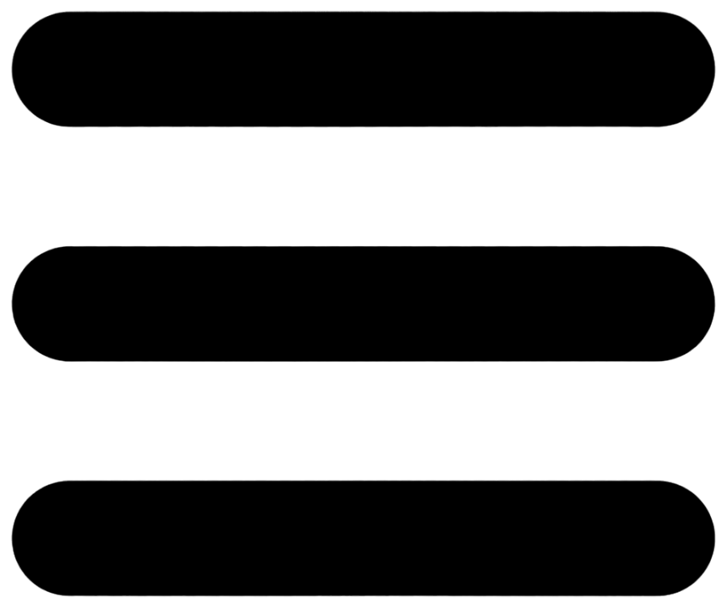
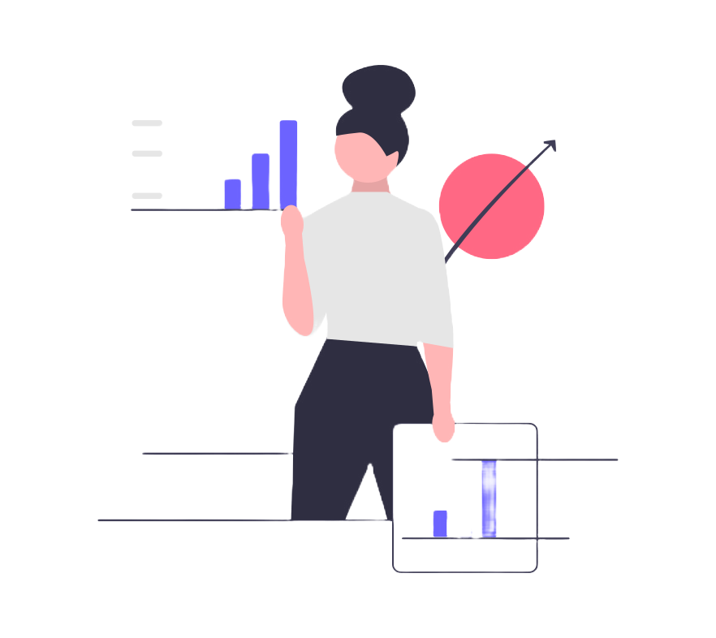

My Project
1. Radar system:
Using equipment like Arduino Uno, Servo motor,HC-SR04 Ultrasonic, Breadboard, Jumper wire, Arduino cable.
Radar system is a technology that uses radio waves to detect and locate objects in its surrounding environment. It operates on the principle of sending out radio waves and then measuring the time it takes for the waves to bounce back after hitting an object.
2. Developed a human flowing Robert system:
Using equipment like Ultrasonic sensor (HC-SR04), Arduino UNO, Micro servo 9G motor, Motor Driver, Sone Jumper
wire, and Breadboard.
A human-following robot using Arduino is designed to autonomously track and follow a person by integrating various components and programming. Key components include an Arduino board, motor driver, chassis, wheels, ultrasonic sensors for obstacle avoidance, and infrared or color sensors for person detection.
3. Extraction of Pure Drinking Water from Air:
Implemented a system using innovative techniques for extracting potable water from the air.
This system harnesses atmospheric moisture to produce clean, potable water using cutting-edge technology. By leveraging advanced condensation and filtration methods, our system can extract moisture from the air and convert it into high-quality drinking water.
4. Defect Detection in Fruits and Vegetables:
K-Means Segmentation and Otsu's Thresholding for precise defect detection agricultural produce.
This system for defect detection in fruits and vegetables utilizes a combination of K-Means segmentation and Otsu's Thresholding techniques to precisely identify and classify defects in agricultural produce.
